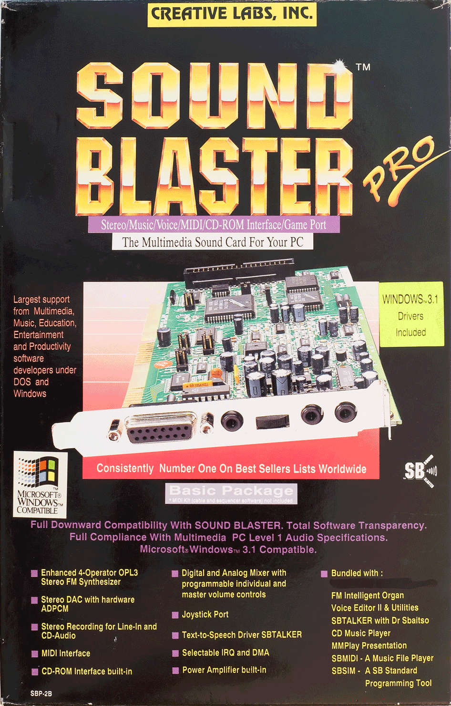
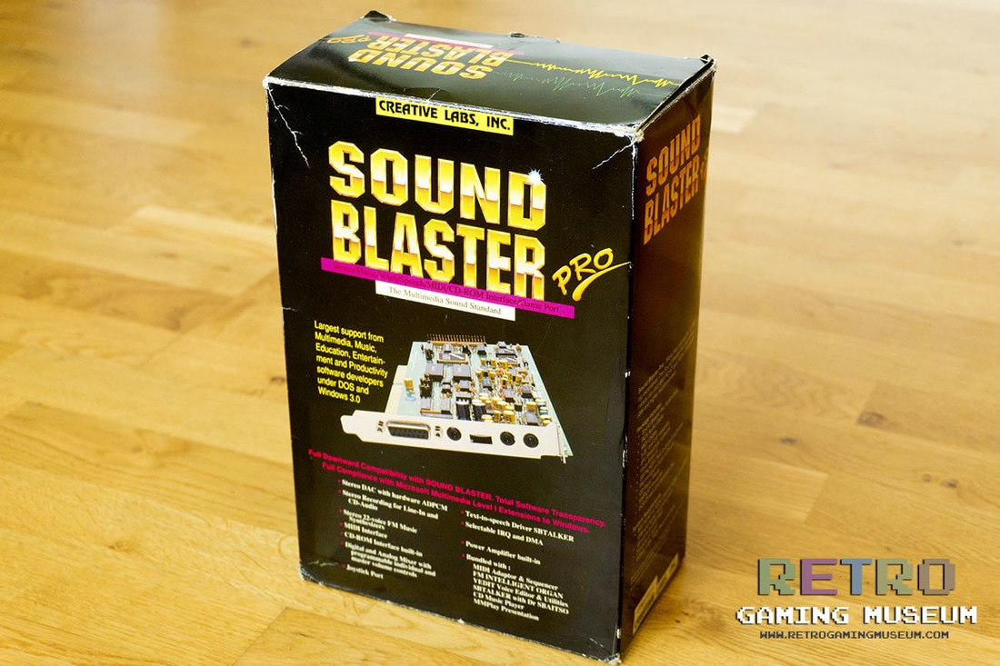
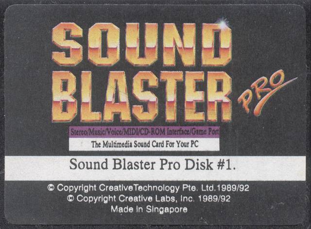
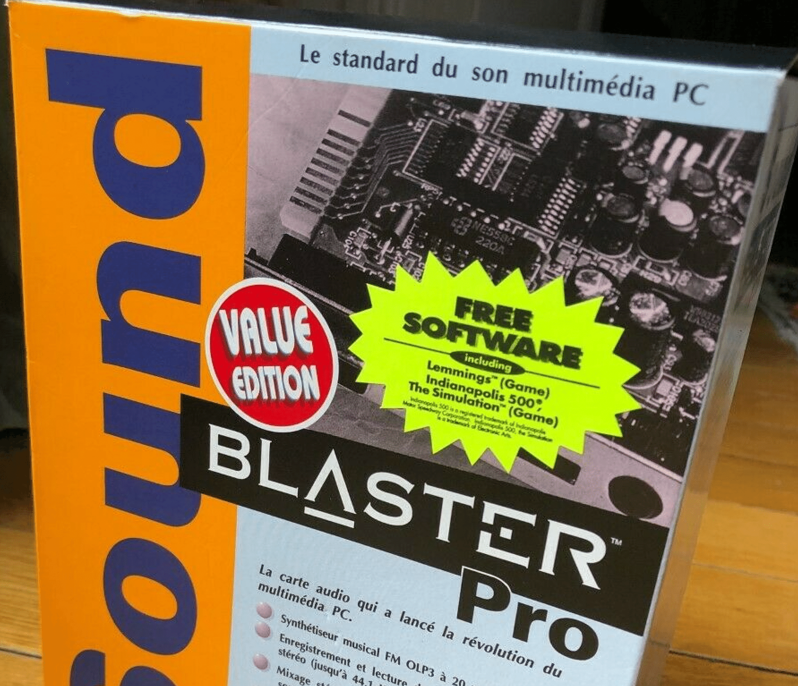

IBM PC dünyası 90’lı yılların başından itibaren ses kartları ile tanıştı. 1987 yılında çıkan Adlib ve sonrasında ultra pahalı Roland MIDI modüllerinin ardından Creative piyasaya makul fiyat etiketli ve dijital ses efektleri sunabilen Sound Blaster ses kartları ile 1990 yılında girdi ve piyasaya 10 yıldan fazla bir süre hakim oldu.
Creative ses kartları içinde bence en önemlisi Sound Blaster Pro modelidir. Hem eskiyle uyumlu, hem stereo, hem güçlü OPL3 yongası hem de CD-ROM arabirimi ile 1991 yılında ortaya çıkar. O zamanın ev bilgisayarı Amiga ile hemen hemen aynı kalitede ses çıkışı verebilen bir karttır bu. Çıktığı dönem biraz problemlidir elbette. İlk sürümünde OPL3 yongası yerine stereo ses çıkışı için 2 adet YM3812 synthisizer chip bulundurur. O dönem piyasada Windows 3.0 olduğundan paketten çıkan yazılımlar Windows 3.0 için üretilmiştir.  Sonraki modellerde (Sound Blaster Pro2 olarak adlandırılan) gerçek OPL3 (YMF262) eklenir, 1992 yılında Windows 3.1 multimedia desteği ile çıkınca ses kartı ile bundle edilen Windows 3.0 programları işlevsiz kalır, kartın kutusu üzerine Windows 3.1 uyumludur ibaresi ile bir süre daha satılır. Sürücüler ve programlar Windows 3.1 için hazırlandıktan sonra kutu üzerine etiketle Windows 3.1 sürücülerinin eklendiği belirtilir.
Bu etiketli Sound Blaster Pro kutuları benim PC’ye ses kartı almaya çalıştığım dönemde sıkça karşıma çıkıyordu, ben farklı bir model ses kartı aldığımdan Sound Blaster Pro içinden hangi programlar çıkıyor ve sürücülerde ne gibi değişiklikler vardı hep merak ettim. 
Geçtiğimiz günlerde bu disketin orijinal içeriğine kavuştum ve bir miktar inceleme imkanı bulabildim 30 yıl sonra.  Sound Blaster Pro daha iyi Sound Blaster modelleri çıkmasına rağmen (Sound Blaster 16) 1993-1994 yıllarında yeni kutu dizaynı ve Indianapolis 500 ve Lemmings oyun bundle’ları ile satışına uzun bir süre devam etti.